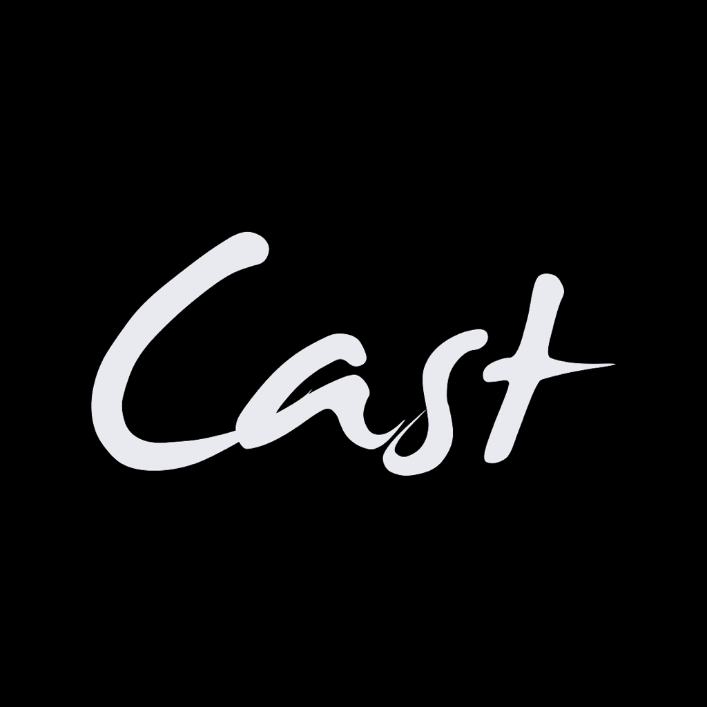

Cast Studio is the personal tool of the Italian music artist Cast to prepare his own short videos and send them to his TikTok account as drafts. Cast reviews every draft in the TikTok app and decides himself whether to publish it.
Cast Studio è lo strumento personale dell'artista Cast per preparare i suoi video e mandarli come bozze al suo account TikTok. Ogni bozza la controlla e la pubblica Cast.